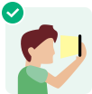
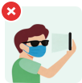
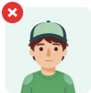

Face the screen Follow the prompts
5s
Please pay attention when testing
Please ensure your face is inside the circle,detection will begin after the countdown ends

Ensure sufficient lighting

Do not cover your face

Do not wear a hat
Do not move quickly
Start Now
1
»
2
»
3
Please open your mouth
Detection Successful
Retry Detection